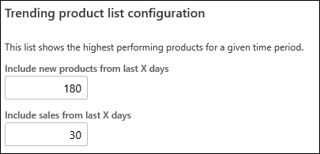
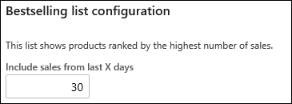
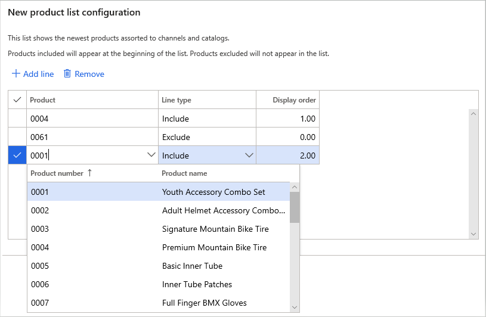
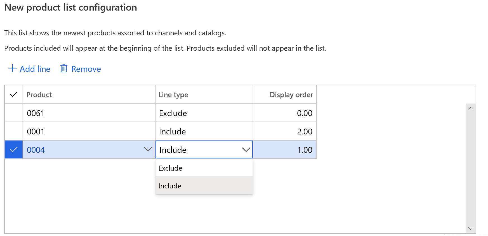
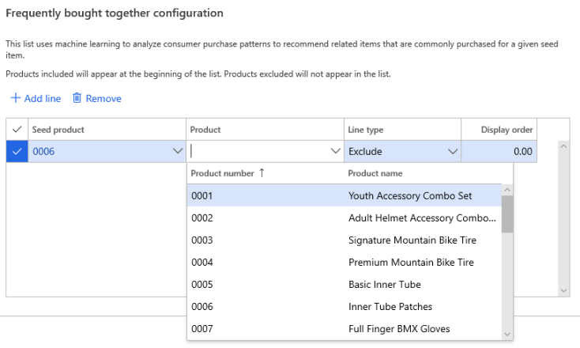
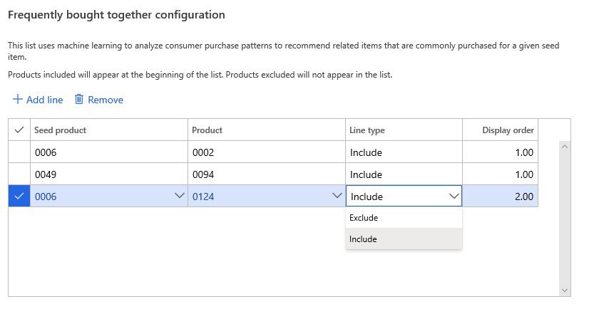

Anpassen von KI-ML-basierten Produktempfehlungsergebnissen
Important
Dynamics 365 Retail ist jetzt Dynamics 365 Commerce und bietet umfassende Handelsfunktionen für alle Kanäle – von E-Commerce über Shops bis hin zu Callcentern. Weitere Informationen zu diesen Änderungen finden Sie unter Microsoft Dynamics 365 Commerce.
In diesem Thema wird erläutert, wie Sie Ergebnisse zu Produktempfehlungen basierend auf maschinellen Lernverfahren mit künstlicher Intelligenz (AI-ML) an Ihr Unternehmen anpassen.
Nach dem Aktivieren der Produktempfehlungen werden die Standardeinstellungen wirksam. Diese Parameter können für viele Anforderungen verwendet werden. Es empfiehlt sich, einige Zeit zum Bewerten einzuplanen und festzustellen, ob die Ergebnisse zur Verkaufsbewegung von Produkten passen. Wir empfehlen, die Ergebnisse einige Tage lang auszuwerten, bevor Sie die Parameter nach Bedarf ändern und erneut testen.
Verstehen der Empfehlungslistenparameter
Informieren Sie sich vor dem Ändern der Parameter, wie sich diese auf die folgenden Ergebnisse auswirken.
Populäre Produktliste
Die Bestseller-Produktliste besitzt zwei Parameter, der geändert werden können:

- Neue Produkte aus den letzten X Tagen einbeziehen – Produkte, die innerhalb der angegebenen Anzahl von Tagen vor dem aktuellen Datum hinzugefügt wurden, können zur Auswahl von Produktkandidaten verwendet werden. Der Standardwert in der Abbildung weist darauf hin, dass Produkte mit einem Alter von 180 Tagen in der Liste der populären Produktliste verwendet werden können.
- Verkäufe aus den letzten X Tagen einbeziehen – Verkaufsvorgänge, die innerhalb der angegebenen Anzahl von Tagen vor dem aktuellen Datum getätigt wurden, können zum Bestellen der Produkte verwendet werden. Der obige Standardwert legt nahe, dass alle Einkäufe, die in den letzten 30 Tagen für ein Produkt getätigt wurden, verwendet werden, um die Platzierung des Produkts in der Liste der populären Produkte zu bestimmen.
Bestseller-Produktliste
Abhängig von Ihrem Unternehmen kann die Bestseller-Liste andere Ergebnisse als Trends liefern, obwohl beide Transaktionsdaten für die Bestellung von Produkten verwenden. Da Bestseller nicht nach Sortimentsdatum ablaufen, können mit Bestseller immer noch sehr beliebte ältere Produkte hervorgehoben werden, die möglicherweise von der Trendliste gestrichen wurden.
Die Bestseller-Produktliste besitzt einen Parameter, der geändert werden kann:

- Verkäufe aus den letzten X Tagen einbeziehen – Verkaufsvorgänge, die innerhalb der angegebenen Anzahl von Tagen vor dem aktuellen Datum getätigt wurden, können zum Bestellen der Produkte verwendet werden. Der obige Standardwert legt nahe, dass alle Einkäufe, die in den letzten 30 Tagen für ein Produkt getätigt wurden, verwendet werden, um die Platzierung des Produkts in der Bestseller-Produktliste zu bestimmen.
Manuelles Hinzufügen oder Entfernen von Produkten aus Empfehlungslisten
Für Neu-, Beliebt- oder Bestseller-Listen
Gehen Sie zu Retail und Commerce > Produktempfehlungen > Empfehlungsparameter.
In der Liste der freigegebenen Parameter wählen Sie Empfehlungs-Listen.
Wählen Sie die Liste aus, über die Sie Produkte hinzufügen oder entfernen.
Um der Tabelle Produkte hinzuzufügen, wählen Sie Zeile hinzufügen aus.
Suchen Sie in der Spalte Produkt nach einem Produkt Name oder Produktnummer.

Wählen Sie unter der Spalte Zeilentyp eine von zwei Optionen aus:
- Einschließen – rückt ein Produkt an die Spitze der Liste
- Ausschließen – Entfernt ein Produkt aus der Liste

Durch das Ändern der Anzeigereihenfolge wird die Reihenfolge der Produkte mit der Markierung Einschließen in der Liste ändern.
- Wenn zwei Produkte denselben Wert für Anzeigereihenfolge besitzen, dann kann die endgültige Reihenfolge dieser beiden Ergebnisse vom Backoffice abweichen.
So entfernen Sie Produkte aus der Tabelle: Wählen Sie die zu entfernende Zeile und dann Entfernen aus.
Für Listen wie Personen gefällt auch oder Wird häufig zusammen gekauft
Im Kontext von Listen wie Wird häufig zusammen gekauft oder Personen gefällt auch, wird das maschinelle Lernen verwendet, um die Kaufmuster von Verbrauchern zu analysieren und so verwandte Produkte zu empfehlen, die gemeinsam für ein einzigartiges Startprodukt gekauft werden.
Ein Startprodukt ist das Produkt, für das Sie Ergebnisse generieren möchten. Im Rahmen der manuellen Anpassung von Empfehlungslisten fügen Sie Ergebnisse für dieses Produkt hinzu oder entfernen sie.
Befolgen Sie diese Schritte, um manuell Ergebnisse für ein Startprodukt hinzuzufügen oder zu entfernen:
- Wählen Sie das Startprodukt aus.
- Suchen Sie in der Spalte Produkt anhand von Name oder Produktnummer nach einem Produkt. 
- Wählen Sie in der Spalte Zeilentyp eine von zwei Optionen aus:
- Einschließen – rückt ein Produkt an die Spitze der Liste
- Ausschließen – Entfernt ein Produkt aus der Liste

- So entfernen Sie Produkte aus der Tabelle: Wählen Sie die zu entfernende Zeile und dann Entfernen aus.
Zusätzliche Ressourcen
Überblick über Produktempfehlungen
Aktivieren von Azure Data Lake Storage in einer Dynamics 365 Commerce Umgebung
Produktempfehlungen aktivieren
Personalisierte Empfehlungen aktivieren
Personalisierte Empfehlungen kündigen
Die Empfehlungen „Produkte mit ähnlichem Aussehen kaufen“ aktivieren
Produktempfehlungen in POS hinzufügen
Empfehlungen dem Transaktionsbildschirm hinzufügen
Manuell kuratierte Empfehlungen erstellen